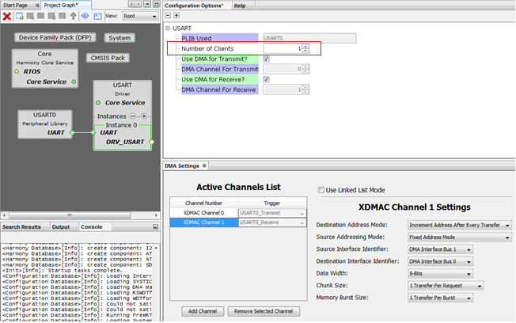

USART Driver library library should be configured via MHC. Below are the Snapshot of the MHC configuration window for USART driver and brief description.

USART Driver Configuration Asynchronous Mode

USART Driver Configuration Synchronous Mode
Common User Configuration for all Instances
- Driver Mode
- Allows User to select the mode of driver(Asynchronous or Synchronous). This setting is common for all the instances
Instance Specific User Configurations
- PLIB Used
- Indicates the underlying USART/UART PLIB used by the driver.
- Number of clients
- The total number of clients that can open the given USART driver instance.
- Available only in Synchronous mode of Operations
- Transmit Queue Size
- Indicates the size of the transmit queue for the given USART/UART driver instance.
- Available only in Asynchronous mode of Operations
- Receive Queue Size
- Indicates the size of the receive queue for the given USART/UART driver instance.
- Available only in Asynchronous mode of Operations
- Use DMA for Transmit?
- Enables DMA For transmitting the data
- DMA Channel For Transmit
- DMA Channel for transmission is automatically allocated in DMA configurations
- Use DMA for Receive?
- Enables DMA For Receiving the data
- DMA Channel For Receive
- DMA Channel for Receiving is automatically allocated in DMA configurations
- DMA Channel For Receive
- Enables DMA For Receiving the data
|
MPLAB Harmony Help Template
|